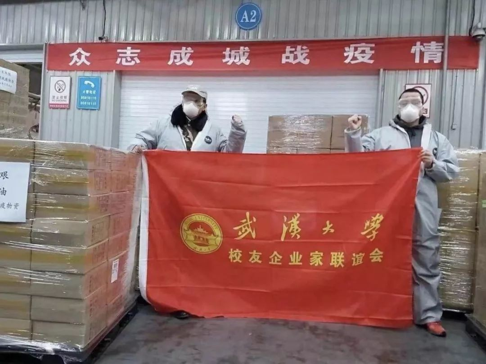
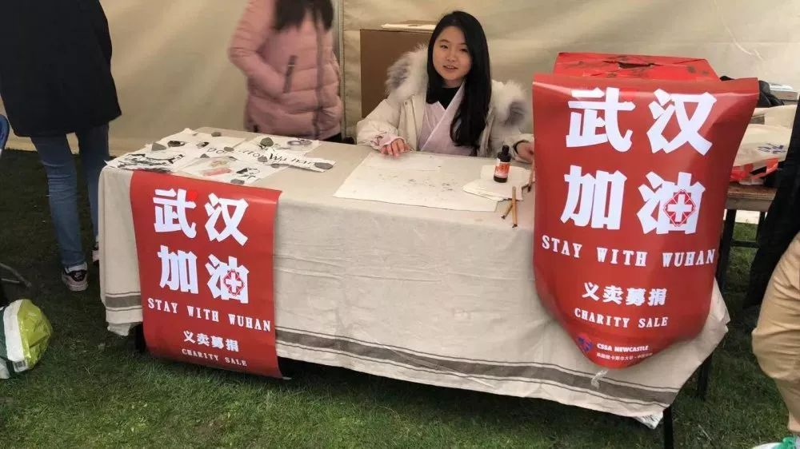

专访薇娅：疫情下，人性至上
原文链接 备份链接 文/雷成林 编辑/大风 突然爆发的疫情几乎让所有的线下门店停摆。在实体业溃败之后，电商护住了城市的血脉，快递员、外卖小哥、线上买菜维持着城市的运转。 在农村，疫情导致各地封村封路，所有的线下交易暂停，农户的果蔬被滞留在 …
大家好，我是田静。
今天周二，2020年2月18日，北京晴，微风。
漫长的假期，周而复始的宅家生活，我都快失去对日程的知觉。
平日里，我们可以通过三餐、工作、社交等各种方式，来赋予我们生活的秩序。
这突然降临的大段自由时光，像个陷阱，让大家的生活一下失衡。
疫情还在继续，每天新增的确诊案例还未停止。我想总得做点什么，才能来维持内心的平衡，而不至于失序。
一个在英国的武汉女孩，提醒了我，宅在家中的我们，可以一起来做件有意义的事。
女孩正在英国英格兰纽卡斯尔大学就读商务管理，疫情期间，她在英国发起了募捐。
期间遭遇了非议，谩骂和各种阻力，但她坚持下来了，募款买到了物资，协调了国际快递，一点点努力传递回家乡。
女孩今年才19岁，刚到英国一年不到，武汉才是她全部的青春记忆。
她说：我最心爱的它，病了，我怎么能视而不见。
她给武汉写了一封信，想要告诉大家，一次次登上热搜，被群嘲、谩骂的武汉协和医院、华南海鲜市场、万家宴的百步亭，曾经是那么的温情和美丽。
武汉只是病了，它一定会痊愈，带着伤痕和记忆一如既往前行。
武汉：
你还好嘛？
我生活了19年的地方。
你病了。我却回不去，但比任何时候都想念你。
想你的时候，我就把武汉地图打开。
看着那些熟悉的街道名称，随着加载一点一点出现，我总是忍不住，深夜哭泣。

#我高中的附近就是武汉协和医院#
我的高中是武汉十二中，就在协和附近，下午的课上完以后，天色是半暗的。
学生呼啦啦从校园里涌出来，整个街道一片湛蓝，那是校服染成的。
超市里、文具店里、人行道上都是捧着热干面纸碗的学生，一边说话，一边大笑，闹腾极了。

△ 我的同学们
出校门是豪大大鸡排店，旁边是一家馄饨店。
馄饨是老板现包的，5块钱一碗，就等着学生下课来了直接下锅。
一勺香油，几把葱花，汤里有新鲜煮开的紫菜虾米，盛出来是满满一整碗的馄饨。
夏天的时候这家店卖凉面，和热干面形式差不多，只是面换成凉拌。
黄瓜丝、海带丝、豆芽、花生碎、炸黄豆给足，鲜浓的香油、酱油、醋一淋，快拌，很解腻，我可以吃足一整个夏天。
出校门右转，顺着走，一整条街都是吃的。
接下来是一家东北饺子馆，他们家饺子不是重点，主要是花甲面巨鲜无比。
再往前走又是卖热干面的、卖热干面的和卖热干面的，可见热干面已经成了“你”的代言人。

△ 武汉热干面
那个时候，我只知道考察各家炸鸡店，自以为天下太平，世界美好，哪里关心过医院这种和病痛挂钩的地方。
周围的同学朋友里有立志从医救人，扬言要进军协和的，提起来，大概也是当做一个神圣的医学殿堂。
现在我打开地图就能看到，原来，从学校再往前走，沿大道右转，再左转，就是现在急缺物资的协和医院。
医院周围是排着长队进医院的感染者，还有来来回回不停歇的救护车。
那里再也不是我熟悉的热闹了，只有漫长的煎熬和等待。
我辗转联系到认识协和医生的人，他们给我发了很多朋友圈、群聊、聊天记录的截屏：
「除夕夜，医生连续八小时不吃不喝不上厕所，因为身上的防护服可能就是最后一件了，大家不敢浪费。」
「他们去要物资，根本要不到……实在没有办法了，现在在用尿不湿当口罩……尿不湿啊。」
记得那晚，我坐在灯下，听完语音，手抖得几乎握不住手机，然后窝在椅子里抱着头，发了很久的呆。

#炒饭店老板的儿子是个
武大学生#
我们接着往协和的方向走吧，还有一家炒饭店。
在一条破旧的巷子里，店面简陋但炒饭不错。
很多工作了一天的务工人员去他们家，炎夏里一杯啤酒一碗炒面。
武汉人热情、豪放，吃着吃着都能聊起来。
老板娘很殷勤，有一个女儿在自家店里帮忙，小姑娘手脚特麻利。
有一天，我看到一个陌生的男孩也在店里干活，就多问了几句。
原来他是店老板的儿子，大学放假后赶来帮家里干活，我问他是哪个大学的，他说是武大的。
男孩的妹妹在旁边很骄傲地补充说，我哥学习特别好，比我强的多。
在武汉，很多小孩子从小就以为，自己长大以后，会自然而然的上武大。
他们谈到自己家人的时候，都有一种骄傲又温暖，愿意为之努力的神情。
我已经很久没有想起这家炒饭店了，当今天他们从遥远的年岁里浮现的时候，我又不敢再想起了。
就像我的很多同学、朋友们，我太熟悉这样普通的人家了，我也知道他们眼下面对怎样的困难。
方方老师的“武汉日记”里写到：
「今天的坏事是一件接着一件。一个叫柳凡的小护士，初二还在上班，没有任何防护，不幸被感染。这份感染，殃及全家：父母和弟弟，悉数病倒。她父母先行过世，昨天，她自己也去世了，只剩弟弟一人还在抢救。下午，我的医生朋友告诉我：她的弟弟，也走了。病毒将一个完满家庭所有的生命，吞噬一尽。」
我一边回忆，一边深感不安，我希望这些曾经与我擦肩而过普通人，他们也都能幸免无事。
不知道这位哥哥有没有参加武大全球校友捐赠物资的事情。

△ 武大校友捐赠
武大真的很厉害，专业的团队，迅速的反应能力，短短时间武大校友会捐赠了上千万的物资，陆续送进医院。
他们的行动激励了我，我作为一名海外学子，也应该尽自己的一份力。
#华南海鲜市场往前是我的小学#
我从没想过，我再熟悉不过的华南海鲜市场，竟然会以这样的方式传遍全球。
这个地方，是用来批发的，正常来讲很少有普通市民会去这里买东西。
华南海鲜市场的对面是武汉一中，是我曾经亲切又熟悉的梦校，也是撒贝宁的母校。
华南往前走是我的小学，往后走是我的初中。
我做梦都不会想到，就是这个曾经路过的普普通通的地方，现在让全世界的人都震惊。
人们都憎恨这个传说中的疫情始发地，所有的愤怒与谩骂都朝这里涌来。
疫情过后，我想它可能会消失在这个地方吧。
这样也好，看着网络上发布的出现在市场里的野味和下水道的肮脏。
我想消失了，周围就会变得干净一些了。消失了，以后路过的时候不会触景生情。消失了，人心也可以变干净一些嘛？
从华南海鲜市场左转再左转，就是武汉中心医院后湖区。
我没事常去晃，那边的馆子每一家都吃过好几次。
有一段时间上完补习课，出来以后天就黑了，到处灯火通明，我喜欢站在那，到处望。
家家户户窗口都亮着明黄色的灯，路上车水马龙，很多家庭或情侣热热闹闹地在附近溜达，商场门口一群爷爷奶奶在跳舞，觉得很有烟火气息。
这大概就是各安其位天下太平的样子吧。
现在这里也是收容患者的一个重要据点，听说里面的八个院长已经感染了一半。
李文亮医生也在这里去世了，李文亮的150多位医护同事也倒下了，连妇产科的医生也顶到一线肺炎病区。
还听说因为李文亮医生的去世，很多人因此迁怒，中止了捐赠给中心医院的物资。
我朋友的妈妈是这里的医生，我看到她在微博上努力地和不同的人辩解澄清，大概已经陷入到了没有防护用品的绝境。
直到2月14日，武汉市中心医院还在继续发布「因医院消耗量大，医院库存十分紧缺，恳请社会各界援助医用物资」的公告新闻。
我身在英国，但看到这些，每天都辗转难眠，我知道我必须要做点什么才行。
1月22号考完试后，我开始写计划书，决定发起募捐。

△ 募捐现场
#百步亭的美食集锦我再也吃不全了#
最后说说被网友群嘲办万家宴的百步亭吧。
现在已经感染了十七栋楼的人，这里是老武汉人住的地方，邻里邻居之间的关系出了名的好，社区也非常强大。

△ 百步亭社区
那附近的小吃也是最有名的，最正宗最地道的老派热干面、水煎包、猪油煎出来的豆皮。
我甚至搜集过百步亭的美食集锦，准备一家一家去吃，但是直到现在还没有成行。
不知道这些店还能不能挨过这次疫情，重新开业；也不知道那些被感染的人，能不能挨过这次劫难。
很多人都安慰我，会好的。
我不愿意反驳，但总是固执地想，只是那么多已经死去的人，那些曾从我的世界里擦肩而过的普通人，该怎么办呢？
很多朋友告诉我一个人募捐不行，那我就开始搬救兵，我联系学联借助他们的平台帮忙募款。
学联需要我做完整方案，我赶紧联系医院了解情况。
我真的没想到疫情过去这么久，随便问哪家医院，都还在缺物资，医院的朋友们都会给我讲悲惨的故事，希望能把物资捐给他们。
我以前也不曾想过，会有比惨这件事，原来惨这件事也是可以被排序的。
我明白比起捐款，他们更需要的是物资。
但我联系国际物流快递公司，才发现可以直接寄到医院的快递公司很少，基本都是把物资转交给红十字会、慈善机构。
但我一定要直接可以寄到医院，亲自给医护人员的渠道才可以。
发起募捐的过程，寻找物资、快递运输，都遇到了各种阻碍，也遭遇了无数的误解和谩骂。我一度觉得这个世界糟糕透了。
但在后来，我遇到很多温暖的人，让我有力量坚持前行。
一个英国老奶奶，看着我的眼睛，缓慢地、温柔、真诚且悲伤的说：我看到了感染的人数，我真的非常难过。

△ 在这里和老师们聊天
跟一个老师说我来自武汉，看到大家惊讶地表情，赶紧道歉，说自己已经很久没有回家了。
话还没说完，周围的一圈外国人赶紧打断我说，没关系没关系，我们并不是害怕你，我们是为你难过。
在大家的帮助下，募捐渠道终于做好，有好心人捐款，也找到了有少量物资的厂商，快了，马上我们就可以把这些物资寄回去。
“你”被封了多少天，我都记不清了，我也不想再知道你更多不好的信息。
我明白别人嘴里说的是空城和疫区，其实就是我偶尔很想回去看看的你。
我曾经失望痛哭过，相信过的世界渐趋分崩离析，面对这个世界的真相，或许是我成人的一份大礼。
但一个朋友给我发来一张照片，是《熔炉》的剧照，上面写着：“我们一路奋战，不是为了改变世界，而是为了不让世界改变我们。”

我们一路奋斗，就是相信，你会回到过去的美丽。
你的市民：何球
2020年2月17日
田静后记：
都说烽火连三月，家书抵万金。
疫情爆发后，大批医务、科研工作者，干警、基层干部，作别家人，逆流而上。
在医院、在实验室，在各地各条战线，与时间赛跑。
被分隔的人们只能靠通信来交流，通过网络，产生了大量感人至深的信件。
有医生写给家人，有母亲写给儿子，有老师写给学生，还有学生写给武汉。
看了何球的来信，不知道你是否有很多话想对武汉说。
据此，我们发起一个征集，#写给武汉的一封信#
收件人可以是这座城市，也可以是你的朋友、亲人 ，甚至是你不认识的人，或者你自己。
信件内容可以是回忆，也可以是未来，甚至是鼓励、倾诉，重要的是记录当下。
寄存方式请在【女孩别怕】评论区直接留言，省事！
纸短情长，万言不嫌长，几句不嫌短，只要走心。
我们会把收集到的信件整理成文，将大家的问候传递出去。
万物有时，花开有期，期待相见……
口述：何球（19岁英国留学生）
编辑：蓝忘姬
设计：大嗨 霹雳羊
本文图片由受访者及网络提供
为中国女性安全 提供专业解决方案
**▬ ▬ ▬ ▬ ▬ ▬ ● ▬ ▬ ▬ ▬ ▬ ▬
**
女 孩 别 怕
未经授权 禁止转载
欢迎分享到朋友圈
原文链接 备份链接 文/雷成林 编辑/大风 突然爆发的疫情几乎让所有的线下门店停摆。在实体业溃败之后，电商护住了城市的血脉，快递员、外卖小哥、线上买菜维持着城市的运转。 在农村，疫情导致各地封村封路，所有的线下交易暂停，农户的果蔬被滞留在 …
原文链接 备份链接 一座人口过千万的超级大都市在突降灾疫后陷入休克，然后艰难走出混乱无望 财经封面。创意设计/黎立 文 |《财经》特派武汉记者 刘以秦 信娜 王小《财经》记者 房宫一柳 黎诗韵 俞琴 王丽娜 王静仪 陈亮 李斯洋 李皙寅 …
原文链接 备份链接 同力协契 共克时艰 武汉“封城”已三周，新冠肺炎全国感染人数还在持续上涨。 所有人都在期待拐点的到来，无数白衣天使依旧坚守在抗击疫情第一线，一刻不敢松懈。社会各界也在通过各种方式参与到这场没有硝烟的抗疫保卫战里。 这 …
原文链接 备份链接 《战疫口述记》，是燃财经在新型冠状病毒肺炎期间推出的特别栏目，记录疫情亲历者的观察和感受。本文为第6篇，查看前5篇请点击《我和公司都快熬不住了》《节后返京，太太太南了》《我的“流浪”春节》《农村这样防肺炎》《我在武汉 …
原文链接 备份链接 武安医生（化名）所在的医院是孝感市三家抗疫医院之一。距离武汉66公里的孝感是距离武汉最近的地级市，截止到1月28日上午，有确诊病例173例。与暴风眼武汉一样，以孝感为代表的武汉周边小城也正在经历着决战时刻。 坐诊之 …